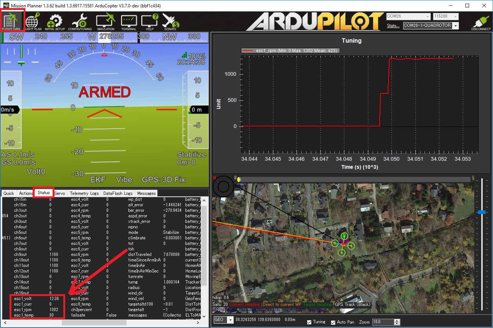

ARCHIVED: no longer supported
Toshiba CAN ESCs¶
ToshibaCAN ESCs are high-end ESCs that allow control and feedback using a custom CAN protocol. Some additional specifications:
FOC which should result in about 10% longer flight times while also being quieter than non-FOC ESCs
Up to 7S batteries (future versions are planned for up to 12S), 50Amps
Up to 12 motors
Fast sync issue recovery time (100ms to 150ms)
Relatively lightweight
Designed and manufactured in Japan
Note
Support for these ESCs is included in Copter-4.0 (and higher), Plane-3.10 (and higher) and Rover-3.5 (and higher)
Where To Buy¶
These ESCs can be purchased by directly contacting the following companies (replace “AT” with “@” in the email addresses)
Toshiba USA: Alan.Li AT taec.toshiba.com
Hikari Alphax Japan: masaki_nakamura AT h-ax.com
CAN splitter boards are also required, the boards used in the above video were provided by EAMS Lab but these are also not readily available for sale.
Connection and Configuration¶
{kind=link}
ESCs should be daisy chained together using CAN splitter boards and then one 4-pin CAN cable should be connected to the autopilot’s CAN port. Note that the last splitter board has a terminator (i.e. no port) on one side.
Warning
If using a Cube autopilot, the CAN1 and CAN2 labels are reversed. These instructions assume the ESCs are connected to the CAN1 port which is labelled “CAN2” on Cube autopilots
{kind=link}
Set the dip switches on each ESC to specify its unique number. This number also maps the ESC to an equivalent PWM output on the back of the autopilot. For example ESC 1 will react just like a normal PWM ESC connected to the autopilot’s MAIN OUT 1. By default this mapping also matches the motor order diagrams.
Set CAN_D1_PROTOCOL = 3 (ToshibaCAN)
Set CAN_P1_DRIVER = 1 (First driver) to specify that the ESCs are connected to the CAN1 port
[site wiki=”copter,rover”]
- Set MOT_PWM_MIN = 1000 and MOT_PWM_MAX = 2000 so ArduPilot uses an output range that matches the ESCs input range
[/site]
[site wiki=”copter”]
- Set MOT_SPIN_ARM = 0.03 meaning the motors will spin at 3% of full thrust when armed
- Set MOT_SPIN_MIN = 0.05 meaning the motors will spin at no less than 5% of full thrust when flying
[/site]
[site wiki=”plane”]
- Set SERVOx_MIN = 1000 and SERVOx_MAX = 2000 for each ESC connected (x corresponds to the ESC number) so ArduPilot uses an output range that matches the ESCs input range
[/site]
Logging and Reporting¶
ToshibaCAN ESCs provide information back to the autopilot which is recorded in the autopilot’s onboard log’s ESCn messages and can be viewed in any ArduPilot compatible log viewer. This information includes:
RPM
Voltage
Current
ESC Temperature
Total Current
Motor Temperature (if the optional motor temperature sensor is connected)
The RCOU messages are also written to the onboard logs which hold the requested output level sent to the ESCs expressed as a number from 1000 (meaning stopped) to 2000 (meaning full output).
This information (except the motor temperature) can also be viewed in real-time using a ground station. If using the Mission Planner go to the Flight Data screen’s status tab and look for esc1_rpm.
{kind=link}
Note
Sending ESC data to the GCS requires using MAVLink2. Please check the appropriate SERIALx_PROTOCOL parameter is 2 (where “x” is the serial port number used for the telemetry connection).